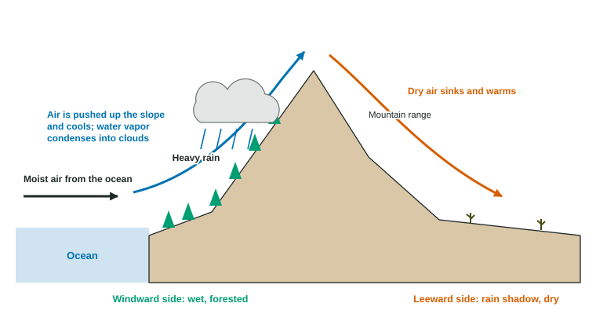

Earth's Geography and Climate
Geography reshapes climate.
Part 1 · Hook
Why this matters
Part 2 · Before you start
What this builds on
Part 3 · Prerequisite check
Quick check before you start
1. Which way do the westerlies blow?
- From the west toward the east
- From the east toward the west
- From the poles toward the equator
- Straight up from the ground
Show the answer
Winds are named for where they come from; the westerlies blow from the west, between about 30° and 60°.
- Correct: From the west toward the east:
- From the east toward the west:
- From the poles toward the equator:
- Straight up from the ground:
2. How does air temperature change with height in the troposphere?
- It falls, about 6.5 °C per km
- It rises, about 6.5 °C per km
- It stays the same
- It falls only above 50 km
Show the answer
The troposphere is heated from the ground, so it cools with height.
- Correct: It falls, about 6.5 °C per km:
- It rises, about 6.5 °C per km:
- It stays the same:
- It falls only above 50 km:
3. What does rising air do to rainfall?
- It cools, so clouds and rain form
- It warms, so clouds evaporate
- It has no effect on rainfall
- It always brings snow
Show the answer
Rising air expands and cools, and its water vapor condenses.
- Correct: It cools, so clouds and rain form:
- It warms, so clouds evaporate:
- It has no effect on rainfall:
- It always brings snow:
Part 4 · See it
See it first

Part 5 · Step by step
How it works, step by step
- Prevailing winds push moist ocean air against a mountain rangethe air rises up the windward slope, expands and cools
- Cool air holds less water vaporclouds form and heavy rain or snow falls on the windward side
- The dried-out air sinks down the leeward side and warmsthe leeward side is a dry rain shadow, often a desert
- Winds drag the ocean's surface, and Earth's rotation turns the moving waterocean currents carry warm water toward the poles and cold water toward the equator, warming or cooling nearby coasts
Part 6 · Key ideas
Key ideas
- Climate depends on latitude, but also on geography: mountains, nearness to the ocean, ocean currents and elevation.
- Rain shadow: the windward side of a mountain range is wet; the leeward side is dry, because the air lost its moisture on the way up and warms as it sinks.
- Water heats and cools more slowly than land, so coastal climates are milder (cooler summers, warmer winters) than inland climates at the same latitude.
- Ocean currents, driven mainly by prevailing winds and turned by the Coriolis effect and the continents, form large loops called gyres. Warm currents (the Gulf Stream) warm nearby coasts; cold currents (the California Current) cool them.
- Higher elevation means colder air, about 6.5 °C cooler per kilometer of height.
Part 7 · Misconception
A common mistake
The wrong idea: Places at the same latitude have the same climate.
What actually happens: Latitude sets the sunlight, but mountains, oceans, ocean currents and elevation change rain and temperature a lot. Seattle and eastern Washington, or London and Calgary, share a latitude but not a climate.
Part 8 · Check yourself
Check yourself
Exam-style questions. Anything you miss goes into your review queue.
1. Why does air drop most of its moisture as it rises up the windward side of a mountain?
- Rising air expands and cools, so vapor condenses
- Mountains have colder soil, which pulls water from the air
- The trees on the slope absorb water vapor directly from the air
- Rising air is squeezed, so the water is pushed out of it
Show the answer
As air rises, the pressure on it drops, so it expands and cools. Cool air holds less water vapor, so clouds form and rain or snow falls.
- Correct: Rising air expands and cools, so vapor condenses: Right: cooling of rising air causes condensation.
- Mountains have colder soil, which pulls water from the air: Soil temperature is not what makes clouds form.
- The trees on the slope absorb water vapor directly from the air: Trees release water vapor; they do not pull it from the air.
- Rising air is squeezed, so the water is pushed out of it: Rising air expands; it is sinking air that is compressed.
2. Why do coastal towns usually have smaller differences between summer and winter temperatures than inland towns at the same latitude?
- Water warms and cools more slowly than land
- The ocean gets far more sunlight than the land nearby does
- Coastal towns tend to be at lower latitudes than inland ones
- Sea breezes carry the cold air away from the coast in winter
Show the answer
Water needs much more energy to change its temperature than rock and soil do. So the ocean stays cooler in summer and warmer in winter, and it moderates the air over nearby land.
- Correct: Water warms and cools more slowly than land: Right: water changes temperature slowly, which moderates nearby climates.
- The ocean gets far more sunlight than the land nearby does: Both get about the same sunlight at the same latitude.
- Coastal towns tend to be at lower latitudes than inland ones: The question compares towns at the same latitude.
- Sea breezes carry the cold air away from the coast in winter: Ocean air is milder in winter, but the cause is water's slow temperature change.
Model or diagram
Moist air crossing a mountain range
3. In the diagram, which side of the mountain range is the windward side?
- The side facing the ocean, where the air rises
- The side away from the ocean, where the air sinks
- The peak, where the cloud forms
- Both sides equally
Show the answer
The windward side faces the oncoming wind. Here the wind blows from the ocean, so the ocean-facing slope is windward.
- Correct: The side facing the ocean, where the air rises: Right: the windward side faces the wind coming off the ocean.
- The side away from the ocean, where the air sinks: The side where air sinks is the leeward side.
- The peak, where the cloud forms: The peak divides the two sides; it is not a side.
- Both sides equally: Only one side faces the wind.
4. According to the diagram, why is the land on the far side of the mountains dry?
- The air lost its water rising and warms as it sinks
- The mountains block the sunlight, so clouds rarely form there
- The wind blows the clouds back toward the ocean side
- Sinking air cools, so it can hold very little water vapor
Show the answer
The air dropped most of its water on the windward side. Sinking down the leeward side, it is compressed and warms, so it can hold more water vapor and clouds rarely form.
- Correct: The air lost its water rising and warms as it sinks: Right: dry, warming air brings little rain to the leeward side.
- The mountains block the sunlight, so clouds rarely form there: Clouds form from moisture and rising air, not from sunlight blocked by mountains.
- The wind blows the clouds back toward the ocean side: The wind keeps blowing from the ocean across the mountains.
- Sinking air cools, so it can hold very little water vapor: Sinking air warms; it does not cool.
5. The Sierra Nevada in California has wet, forested western slopes and the dry Great Basin to its east. Which feature of the diagram does this match?
- Moist Pacific air rising and raining on the west side
- Air sinking on the west side and rising on the east side
- A warm ocean current flowing between the two sides of it
- Plate boundaries that make the whole east side volcanic
Show the answer
Westerly winds bring moist air from the Pacific. It rises over the Sierra Nevada, drops rain and snow on the western slopes, and leaves the eastern side in a rain shadow.
- Correct: Moist Pacific air rising and raining on the west side: Right: this is the rain shadow effect, with the wet side facing the Pacific.
- Air sinking on the west side and rising on the east side: Air rises on the windward (west) side and sinks on the east.
- A warm ocean current flowing between the two sides of it: No ocean current flows between the slopes of a mountain range.
- Plate boundaries that make the whole east side volcanic: The dryness comes from the rain shadow, not from volcanoes.
Data
Two towns on opposite sides of a mountain range
| Town | Side of the range | Yearly precipitation (mm) | Coldest month average (°C) | Warmest month average (°C) |
|---|---|---|---|---|
| Fernvale | West (facing the ocean) | 2,200 | 5 | 17 |
| Dry Gulch | East | 250 | -6 | 24 |
6. How does yearly precipitation in Fernvale compare with Dry Gulch?
- Fernvale gets nearly nine times as much
- Fernvale gets about twice as much
- They get about the same amount
- Dry Gulch gets nearly nine times as much
Show the answer
- Correct: Fernvale gets nearly nine times as much: Right: 2,200 ÷ 250 = 8.8.
- Fernvale gets about twice as much: 2,200 is much more than twice 250 (500).
- They get about the same amount: The difference is 1,950 mm, which is large.
- Dry Gulch gets nearly nine times as much: Dry Gulch gets far less, not more.
Part 9 · Summary
Summary
Part 10 · Up next
What comes next
Part 11 · Connections